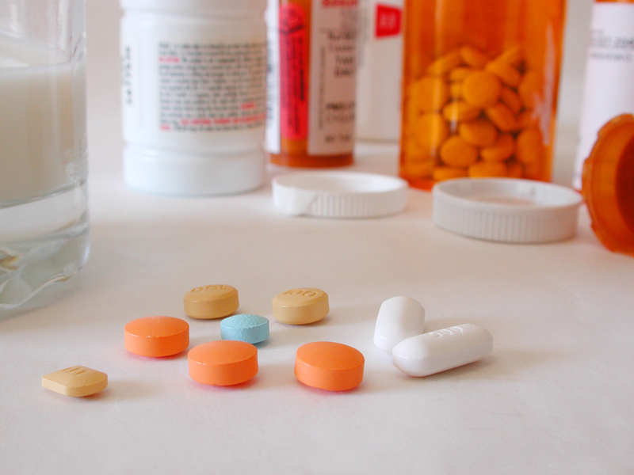

Risking It All
Studying the Effect of Ritalin on Decision Making
Ruhi Nath
Fall 2012

Double-or-nothing. That’s the name of the game in the study done by
Dutch and English scientists on how methylphenidate (MPH), a stimulant
better known as the focus-enhancing drug Ritalin, affects the risk
taking behavior of healthy women. MPH increases the extracellular
levels of noradrenaline, which affects heart rate and blood pressure,
and dopamine, which plays a role in reward-driven learning in the
brain, thus having noticeable effects in the body. The goal of this
study was to determine how Ritalin, which is often taken illegally as a
“smart” drug, affects decision-making in healthy adults.
While primarily a prescription drug used to treat a
multitude of psychiatric disorders, such as ADHD, Ritalin is also a
commonly abused drug amongst college students and adults alike within
the United States. On average, the US produces and consumes
approximately 85% of the world’s MPH. As a stimulant, Ritalin affects
the body in ways similar to amphetamines and cocaine, which lends
itself to the dangerous realm of an addictive drug. The effects of
Ritalin on decision making is unknown, thus this is the first study of
its kind, delving into the possible effects of Ritalin on the decision
making abilities of healthy individuals.
In this study, published in the September 2012 issue
of Neuroscience, a group of 40 adult, healthy women were randomly split
into two groups of 20 subjects each, and then in a double-blind
experiment, one group was given placebo and the other was given 20mg of
MPH each. The subjects were then asked to play a gambling game, which
was rigged to make them lose. They each had 30 chances to accept their
loss or go for a “double-or-nothing” gamble. In the study the women
were playing with fictional money but had the incentive of a real cash
prize if they were the overall winner. Conducting a study with mixtures
of nominal and actual rewards has been used in behavioral economics to
produce behavior qualitatively and quantitatively similar to real-life
behavior. As the stakes were raised, subjects given the placebo bowed
out of the game, while subjects given MPH continued taking risks at a
consistent level, no matter how high the stakes got. These findings
suggest that Ritalin perpetuates risky decision making in healthy adult
women.
In people diagnosed with attention deficit
hyperactivity disorder (ADHD) and dementia, taking MPH balances out the
risky behavior of these patients, normalizing their behavior to
average. The findings of this particular are so interesting the effects
of focus enhancing drugs on healthy subjects is unexplored, and this is
the population which abuses this medication most often. Scientists
believe these results are likely due to Ritalin’s effect on dopamine
receptors, which is known to alter probability estimates, such as in
the case of patients with Parkinson’s disease. There is also the
potential effect of an increased reward incentive - double or nothing
provides the opportunity to potentially make twice what you lost. Since
dopamine affects reward-driven learning, the extra stimulation appears
to impair a person’s judgment with regard to gambling and probability.
The exact mechanism is still unknown, but the potential here is huge --
use of Ritalin can easily shift from poor decision making during a
gambling game to poor decision making in all aspects of daily life.
About the Author
Ruhi Nath is currently a second year pre-medicine student pursuing a Public Health major and a minor in Anthropology.